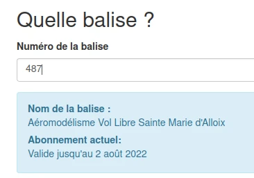
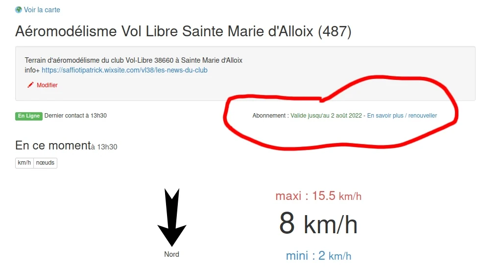
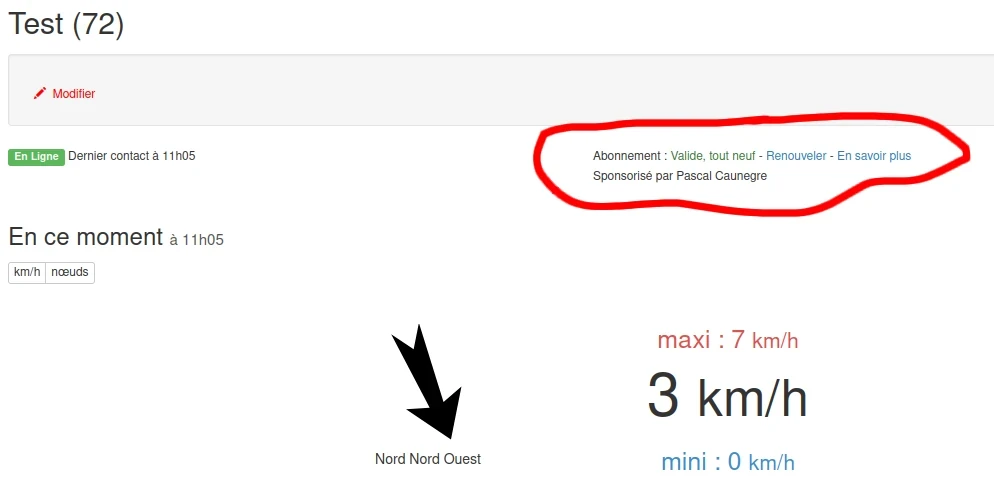

Rendez-vous sur la page dédiée : https://abo.openwindmap.org/
Les coûts sont les suivants :
Ainsi, chaque balise doit avoir son propre abonnement pour que les données émises puissent être mises à disposition.
La consultation et l'accès au données restent gratuits pour tous.
La date varie pour chaque appareil, en fonction de leur activation initiale et de leur historique.
(Certains appareils sont déjà marqués comme ayant leur abonnement expiré. C'est parce qu'ils n'ont plus d'abonnement actif. Si vous souhaitez en remettre un en service, il suffit de renouveler l'abonnement)

Lorsque l'on consulte les mesures sur le site OpenWindMap, les détails de l'abonnement apparaissent.
Exemple : https://openwindmap.org/487

Tout le monde !
Il n'est pas nécessaire d'être le propriétaire d'une balise pour renouveler son abonnement. Vous pouvez sponsoriser une balise que vous appréciez en payant pour elle.
Au moment du renouvellement, vous pouvez indiquer le nom que vous voulez voir apparaître comme sponsor :

Tout est détaillé en bas de la page https://abo.openwindmap.org/